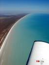
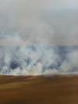
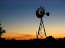

|
A busy day was awaiting us - we knew that. First of all we still hadn't found out were to stay overnight. It had to be somewhere between Port Hedland and Mount Augustus. As we would have to refuel in Paraburdoo anyway, we thought it would be quite convenient to book accommodation there. The woman from the Paraburdoo Inn didn't sound that friendly and wanted to charge us an extra $20 for a pickup from the airport. We booked it, but continued to try to find something better. After a couple of phone calls a station just south of Port Hedland was found. The airstrip isn't mentioned in any kind of aviation publication. Not the AOPA Airfields book, not the Western Australia Country Airstrip Guide, and certainly not in the ERSA. We only knew about it because their neighbor (1 hour down the road) had told us. That is probably also the reason that they sounded a bit surprised when we called and booked three beds for the night. Later we found out, that we are the first houseguests ever to land on this airstrip. In fact only about 15 different planes have landed there in the past 12 years ;-).
Before we could leave Broome, we had to update the homepage. As mentioned earlier, there are two internet cafes in town. The first one had a queue. We didn't feel like waiting at all 
and went around the corner to the next place. We think we have now found out why there was no line there. The connection was the slowest I have ever experienced. I'm convinced that sending a byte at a time with a carrier pigeon would have been faster. Unbelievable - about 10 people had to share a 56K modem. There was no way we could have uploaded all full size pictures. Instead we decided just to upload the small thumbnail versions of the pictures that go together with the text. That took almost two hours.
Lunch, getting a taxi to the airport, refueling and all that stuff takes its time. Take off from Broome, with Edlef at the wheel, was first around two o'clock in the afternoon.
Along the coast we went southwest to Port Hedland where we refueled and had yet another 
argument on where to go after Mount Augustus the following day. The decision was finally made to go to Carnarvon first and then Coral Bay. Indee station was called again to check for runway length and condition. 950 meters was good news, so we flew southbound for about 15 minutes before being overhead Indee station. The strip was long and narrow but generally in a good condition, as promised. The reason - Colin, the owner of Indee station, and his friend Stumpy had graded the entire strip with a rail - just for us (it had been quite a while since it had been used last time).
Indee station was indeed a positive surprise. Colin and Stumpy were awaiting us at the end of the strip and drove us back to the homestead (we could have walked the distance - it was only about 500 meters :-) where Betty welcomed us and showed us to our rooms. Immediately 
after we had arrived the "Happy Hour" started. "Happy Hour" is between 6 and 7 pm. Everybody comes together for a bit of a chat, a beer, a glass of wine and crackers. That day we were 11: Chris & Lotte (a German couple), Frank & Jen, Stumpy & Nell (all friends of Colin & Betty), the hosts and us. A great way to get to know other guests and the people living at the station. Betty had offered us to join them for dinner and we accepted gratefully. Before we knew it, it was past 11 o'clock.


|
|
|
{kind=link}
{kind=link}
{kind=link}